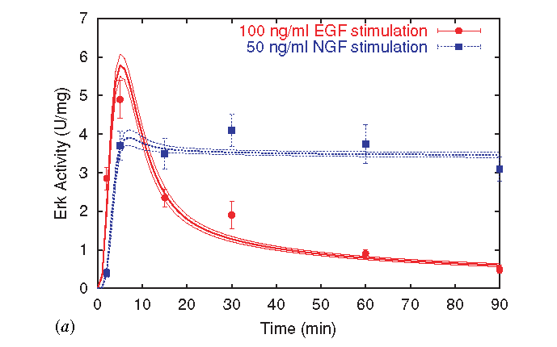
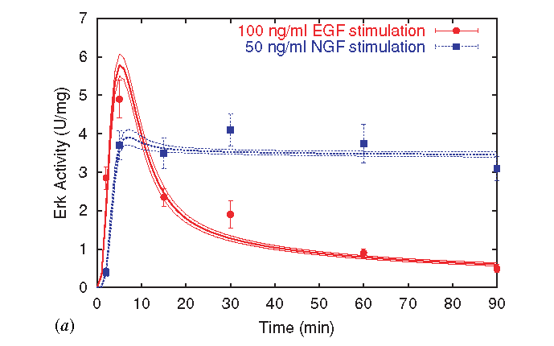

The Manifold Boundary Approximation Method (MBAM)
Summary
To this point, we have discussed several ideas
We are going to bring these ideas together to develop a method for constructing simpler models (fewer parameters) from complex ones.
- Practical Identifiability/Sloppiness (How to define?)
- Low-effective dimensionality (Manifold widths)
- Manifold boundaries
- Geodesics systematically explore model behavior space
We are going to bring these ideas together to develop a method for constructing simpler models (fewer parameters) from complex ones.
What are the boundaries?
Example: $y = e^{-\theta_1 t} + e^{-\theta_2 t}$
Three boundaries:
The boundaries are physically interesting limiting approximations.
By choosing the boundary oriented with the long axis, can we find a low-dimensional approximation to the complicated model?
Three boundaries:
- $\theta_\mu \rightarrow 0$
- $\theta_\mu \rightarrow \infty$
- $\theta_1 \rightarrow \theta_2$
The boundaries are physically interesting limiting approximations.
By choosing the boundary oriented with the long axis, can we find a low-dimensional approximation to the complicated model?

Model Reduction
Model reduction is a very old problem with many approaches:
Existing methods fall short for several reasons:
- Mean field theory
- Renormalization Group
- Singular Perturbation
- Lots of methods for Dynamical Systems from Controls Community
Existing methods fall short for several reasons:
- Limited to specific functional forms
- Black box approximations
- Need to know which parameters are small a priori.
Model Reduction
There are several challenges to doing parameter reduction in sloppy systems
- Need to find (nonlinear) combinations of parameters.
- How to remove a parameter combination from the model?
- Fixing parameters to predetermined values does not simplify the model (e.g., does not reduce the dynamical order)
MBAM
- Choose an initial direction: eigenvector of $\mathcal{I}$ with smallest eigenvalue
- Choose the orientation so that the parameter space norm will grow when following the geodesic.
- This direction is usually involves a complicated combination of most parameters.
- Solve the geodesic equation numerically
- Monitor the behavior of the parameters in the geodesic to identify a limiting approximation.
- Requires some human intervention/insight.
- Evaluate the limit to remove one parameter combination.
- Fit the behavior of the new model to original behavior.
Geodesics near the boundaries
- The initial direction can be a complicated combination of parameters.
- Near the boundary, the geodesic rotates to reveal a limiting approximation.
- The smallest eigenvalues approach zero at the boundary.
Worked Example: Enzyme Reaction
$$ E + S \rightleftarrows C \rightarrow E + P $$
\begin{align} \frac{d}{dt} [E] & = -k_f [E][S] + k_r [C] + k_c [C] \\ \frac{d}{dt} [S] & = -k_f [E][S] + k_r [C] \\ \frac{d}{dt} [C] & = k_f [E][S] - k_r [C] - k_c [C] \\ \frac{d}{dt} [P] & = k_c [C] \end{align}
Three parameters: $k_f$, $k_r$, $k_c$.
\begin{align} \frac{d}{dt} [E] & = -k_f [E][S] + k_r [C] + k_c [C] \\ \frac{d}{dt} [S] & = -k_f [E][S] + k_r [C] \\ \frac{d}{dt} [C] & = k_f [E][S] - k_r [C] - k_c [C] \\ \frac{d}{dt} [P] & = k_c [C] \end{align}
Three parameters: $k_f$, $k_r$, $k_c$.
Model Manifold
- 3 Dimensional Model Manifold
- Two boundaries (red and green)

Geodesic
- Geodesic finds boundary at $\tau = 0.37$
- Two parameters become infinite: $$ k_f, k_r \rightarrow \infty $$
Finding the reduced model
Focus on the equation for $[S]$:
\begin{align} \frac{d}{dt} [S] & = -k_f [E][S] + k_r [C] \\ \frac{1}{k_r} \frac{d}{dt} [S] & = -\frac{k_f}{k_r} [E][S] + [C] \\ \rightarrow_{k_f, k_r \rightarrow \infty} 0 & = - \frac{1}{K_d} [E] [S] + [C] \\ \implies [C] & = \frac{1}{K_d} [E][S] \end{align}
\begin{align} \frac{d}{dt} [S] & = -k_f [E][S] + k_r [C] \\ \frac{1}{k_r} \frac{d}{dt} [S] & = -\frac{k_f}{k_r} [E][S] + [C] \\ \rightarrow_{k_f, k_r \rightarrow \infty} 0 & = - \frac{1}{K_d} [E] [S] + [C] \\ \implies [C] & = \frac{1}{K_d} [E][S] \end{align}
Finding the Reduced model
$$ K_d [C] = [E][S] $$
\begin{align} E_0 & = [E] + [C] \\ & = \frac{K_d [C]}{ [S]} + [C] \\ \implies [C] & = \frac{E_0[S]}{K_d + [S]} \\ \implies \frac{d}{dt} [P] & = k_c [C] = \frac{k_c E_0 [S]}{K_d + [S]} \end{align}
which is the famous Michalies-Menten equation.
Comments
- Michaelis and Menten originally assumed an equilibrium approximation:.
- $d[S]/dt = 0 \implies K_d [C]= [E][S]$
- Formally valid if $k_f, k_r \gg k_c$
- Equivalent to the boundary.
- If $d[S]/dt = 0$, then $k_f$ and $k_r$ are structurally unidentifiable. $K_d$ is the identifiable combination.
- Michaelis and Menten applied their deep physical insight into the system behavior.
- MBAM extracts the physical insight from the identifiablility analysis.
EGFR Revisited
- 48 Parameters
- 29 Differential Equations
- 68 data points
 

Reduced Network
- 12 Parameters
- 6 Differential Equations
- Equivalent fit to data
Interpreting the Reduced Model
- Effective "renormalized" parameters $$ \phi_9 = \frac{[BRafI] (kRap1ToBRaf)(KmdBRaf)(kpBRaf)(KmdMek)}{[PP2AA][Raf1PPtas](kdBRaf)(KmRap1ToBRaf)(kdMek)} $$
- Interpretation: efective rate of information flow through the channel
- Emergent control knob
- No black box
- Effect of changes to microscopic parameters can be predicted
- Dynamical Variables: Functional, biological module
- The character of the model has changed
- Proteins $\rightarrow$ Signaling
- Chemistry $\rightarrow$ Biology
Ising Model
$$ \mathcal{H} = - \sum_{nn} J_{ij} s_i s_j - h \sum s_i $$
- One parameter for each nearest-neighbor bond.
- Boundaries: $J_{ij} \rightarrow \infty$
- $P(s_i \neq s_j) = 0$
- Two spins cluster into a single, larger spin
- Iterating clusters more spins into effective "blocks" of spin
- Result: model relating effective relationships among large-scale domains
Ising Model
$$ \mathcal{H} = - J_1 \sum_{nn} s_i s_j - J_2 \sum_{nnn} s_i s_j - \dots$$
- Boundaries: $\tilde{J}_i \rightarrow \infty$ (Fourier transform of $J$'s)
- Spin configuration of the $i^{th}$ frequency has probability zero.
- Iterating removes spin configuration of highest frequencies
- Result: model relating the effective relationships among configuration with long-length scale correlations.
Limitations of the MBAM
- Not fully automatic
- Computational challenges
- Ill-conditioned metric (not a problem in practice?)
- Geodesics can be expensive
- Successfully applied on models with 100s of parameters and dynamical variables.
- This is likely the limit with current techniques.
- Does not remove structural unidentifiabilities (more on that to come)
- Requires a hierarchy of boundaries (more on that to come)
- Models without boundaries include linear least squares
- Many models are unbounded in some direcions but included bounded cross sections.
- MBAM works in these cases.
Where is it known to work
- Chemical/Biochemical kinetics (Conservation of mass)
- Compartment models (Conservation of mass)
- Power system Transients (Singular Perturbation)
- Stable Linear Time Invariant Systems (Balanced Truncation)
- Composition of elementary functions (exponential, rational polynomial, etc.)
- Bayesian networks/Markov Chains/Markov Random Fields (Conservation of Probability)
- Molecular dynamic with harmonic potentials (Conservation of energy)
- Neural Networks
- Exponential Families (e.g., Ising Model)
- Models with discrete symmetries (Orbifolds)
- Hogdkin-Huxley Neurons